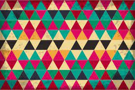
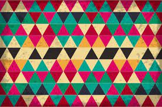
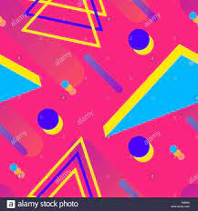
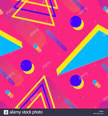
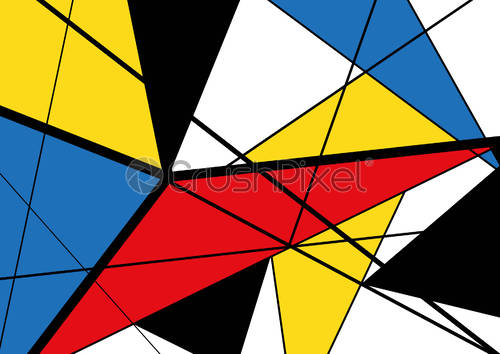
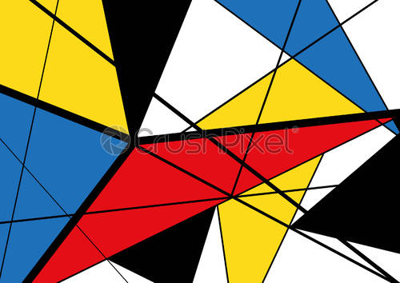
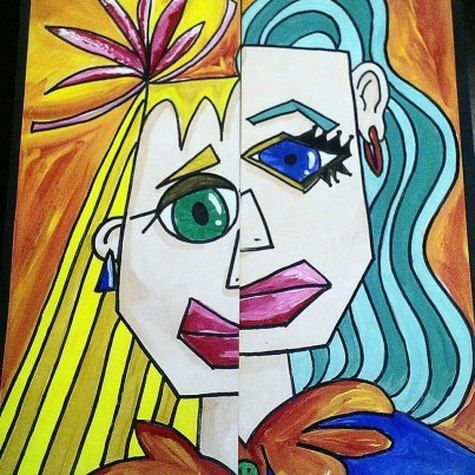
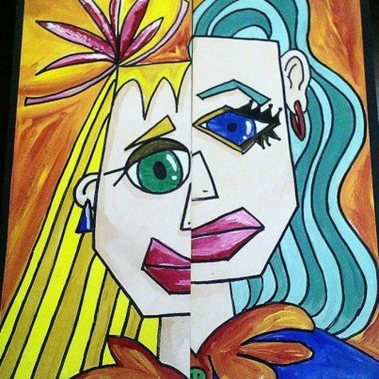

Start
A Mask Tells us More Than a Face - Oscar Wilde
Increasingly our identity is being reduced down to the numeric result of facial recognition algorithms. Thousands of micro-calculations are performed almost instantly on the distance between the physical points on our faces (and Irises). These long floating point numbers, that are the result of these calculations, get recorded and re-tested and eventually become, to a certain degree, the proof of who we are. (atleast to the machines...)
{ "your_identity" : "erwewewrg8jwefhweuf8wehwr9" }
Self Portrait give you the opportunity to discover, explore and even get creative with this same dataset produced by Face Mesh technologies.
Click next down below to get started...
Encode
We will need to have some input in order to generate the Face Mesh. Ideally you will have access to a webcam and can click the 'Start Video' button. You will need to allo the browser to access your webcam signal.
Once your video is enabled you will see a face mesh has been rendered on top of your live video. This is a result of the FaceMesh machine learning algorithm predicting where the hundreds of points on your fae will be in the next video frame.
Generate
Now that we have captured the landmarks of your face, we can generate a 3D model by clicking the 'Generate 3D Model' button. Try to get your face in the center of the image before you click the button. If you need to remake your model you can click the button again.
Once your model is generated you can navigate around the 3D space with your mouse or trackpad.
Explore
Propagate
The next and previous buttons help you to navigate through your content.
 


 

 

 
